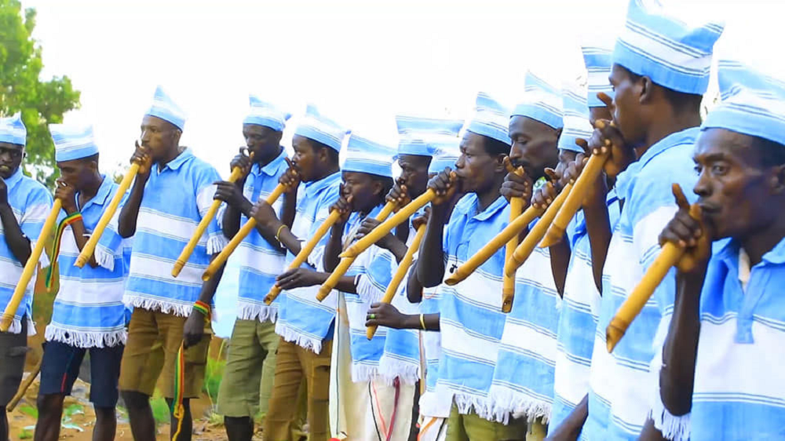

The Phila of the Dirashe
Note 032
Home > Blog A Musician's Log > Note 032
A melody distributed among instruments
In 1965, the ethnomusicologist Jean Jenkins recorded a flute ensemble accompanying a circular dance in Gidole, southern Ethiopia. The musicians played bamboo pipes of different lengths, each producing a single principal pitch. Rather than performing complete melodic phrases individually, they contributed successive notes to a collective musical texture.
Jenkins also collected a set of fifteen such instruments, now preserved at the Horniman Museum in London. The museum identifies them as stopped, end-blown flutes without fingerholes and describes their performance through hocket, a technique in which successive notes are distributed among different musicians.
The instruments belong to the musical traditions of the D'irasha, also known in historical documentation as the Gidole or Derashe people. The name fila, alternatively written filla or phila, is used in connection with both the flute and the musical and dance practices associated with it.
The significance of this configuration is immediately apparent. Each individual pipe has extremely restricted melodic possibilities. Its contribution to a larger sequence depends on the presence of other instruments, each supplying pitches unavailable on the first.
The ensemble therefore cannot be understood simply as several musicians playing together. Its musical organization begins with the distribution of pitch itself.
One tube, one principal pitch
The instrument's construction is relatively simple.
The example preserved under catalogue number M23.2.65/10 at the Horniman Museum consists of a bamboo tube measuring approximately 410 millimetres in length and 30 millimetres in diameter. It is closed at its lower end by a natural node and blown across its open upper end.
The instrument has no fingerholes, keys, or other devices for selecting different notes. Its principal pitch is determined largely by the effective length of the enclosed air column, together with the tube's internal dimensions and the player's blowing technique.
In Hornbostel-Sachs classification, it belongs to category 421.111.211: stopped, single, end-blown flutes without fingerholes, used in sets.
The absence of fingerholes does not mean that the sound is entirely immutable. Blowing pressure and embouchure can affect the response of an edge-blown flute, and sufficiently strong excitation may produce higher resonances. Nevertheless, the surviving documentation identifies these instruments principally with the production of one assigned pitch rather than with the execution of a complete scale by a single player.
A set of pipes of graduated lengths provides a collection of different pitches. Instead of joining those tubes physically into a panpipe, the D'irasha tradition distributes them among separate musicians.
Each individual instrument is therefore acoustically functional but melodically restricted. Its principal role is defined by the pitches available elsewhere in the ensemble.
This arrangement distinguishes fila from panpipes whose multiple tubes are controlled by one performer, although the two instrument types may employ related principles of distributing pitch among separate air columns.
Interlocking musical parts
The succession of notes among different performers is commonly described by ethnomusicologists as hocketing.
The term derives from European medieval music theory, where hoquetus designated a technique involving the alternation of sounds and rests among musical voices. In comparative ethnomusicology, it has acquired a broader application to musical systems in which different performers or instrumental parts contribute successive elements to a composite pattern.
J. H. Kwabena Nketia's 1962 study, The Hocket-Technique in African Music, established an important analytical framework for examining such arrangements across African musical traditions.
The D'irasha flutes provide a particularly clear example because the division of musical material is supported by the instruments' physical configuration.
The players cannot ordinarily execute the complete pitch sequence on their individual pipes. Each must enter at the appropriate moment in relation to the notes produced by the others. The resulting texture depends on the coordination of several elements: pitch assignment, rhythmic placement, breath articulation, and the repetition of established melodic patterns.
The individual performer must know when to sound and when to remain silent. Both activities contribute to the organization of the music. A rest in one instrumental part is not simply an absence of sound but may provide the temporal space occupied by another performer.
The technique does not necessarily imply that all notes form a single uninterrupted melodic line. Interlocking arrangements can also produce repeated figures, overlapping attacks, and more elaborate relationships among instrumental parts.
The ensemble and its variable dimensions
Historical documentation does not establish a single obligatory number of instruments. The fifteen flutes collected by Jenkins in 1965 constitute a surviving museum set. Another source provides evidence for a considerably larger formation.
In 1973, Folkways Records published Ritual Music of Ethiopia, recorded and edited by Lin Lerner and Chet A. Wollner. The album includes individual demonstrations of instruments associated with Gidole, followed by an ensemble performance. Its accompanying notes describe thirty-six musicians, each playing a flute capable of producing a single principal note. The instrumentalists performed together with dancers, participating in a circular formation.
The same documentation identifies filla flutes of different sizes, demonstrating that the instrument existed in several dimensions and was not restricted to one standardized length.
A later investigation by Zebib Tadiwos (2013), devoted specifically to D'irasha wind instruments, discusses the fila's construction and musical organization, including the use of diatonic and diminished-scale materials.
Music, dance, and movement
The fila does not exist solely as an instrumental arrangement. Historical descriptions associate it closely with dancing, singing, and communal celebrations.
The Horniman Museum records that Jenkins documented the flutes accompanying a round dance in Gidole. The Folkways account likewise describes musicians performing while participating in circular movement, alongside additional dancers. Songs associated with these celebrations addressed agricultural activities, including harvesting and ploughing, as well as the shilota harvest festival.
The performers were therefore engaged in a musical activity that combined instrumental coordination with bodily movement and social participation. This is important because the organization of a fila performance cannot be reconstructed solely from its pitches. The musicians' movements, their position in relation to one another, and the surrounding singing and dancing contribute to the circumstances in which the instrumental patterns are produced.
The historical recordings also distinguish fila from other local wind instruments, including the mira panpipes and horns identified as hanata and iolata. These instruments were associated with different activities, such as signalling, festival gatherings, and music performed outside organized celebrations.
The fila was therefore one component of a more extensive instrumental culture, rather than an isolated example of collective flute playing.
Musical instruments and social organization
The relationship between the fila and D'irasha social life has received increasing attention in Ethiopian scholarship.
In his 2013 investigation, Zebib Tadiwos emphasizes that traditional wind instruments participate in a variety of social and cultural activities beyond entertainment. Their significance extends into ceremonial practices and the organization of communal life.
Research by Gashaw Kachano and Alemante Amera Ayalew (2023) similarly documents the social functions of D'irasha instruments, including their association with economic activities, mourning, celebrations, and the mobilization of collective labour. Their study identifies filla and tarba among instruments associated with social status and prestige.
A related investigation published in 2026 by Gashaw Kachano Kitolo and Embete Dmelash Balcha examines how musical instruments among the D'irasha and neighbouring societies participate in the representation of social hierarchy, leadership, and other organizational relationships.
These findings complicate an interpretation of fila as a purely egalitarian musical system. The fact that performers depend upon one another does not establish that they possess identical authority, status, or responsibilities. Musical interdependence may coexist with established distinctions in expertise, leadership, and access to instruments.
The historical Folkways documentation provides an instructive example. Its collectors reported that a designated individual was responsible for the manufacture, storage, and distribution of musical instruments in the Gidole community they visited. This role was reportedly assigned through local authority and involved responsibilities extending beyond actual performance.
The organization of collective music may depend upon social arrangements not directly audible in the resulting melody. The relationship between instrumental structure and social structure is therefore more complex than a simple equivalence between distributed notes and communal equality.
Knowledge shared across performers
The fila also raises questions about the transmission of musical knowledge. A musician playing a single-note flute must learn a part whose significance depends on its relationship to other parts. Knowing the pitch produced by the instrument is insufficient. The performer must also recognize the rhythmic positions in which that pitch contributes to the collective pattern.
The process requires coordination between individual memory and shared musical conventions.
However, the surviving evidence does not establish a single method by which D'irasha musicians learn their parts. Nor does it justify describing the ensemble as leaderless or assuming that all performers acquire identical musical knowledge.
The physical limitations of an instrument do not necessarily reflect the musical knowledge of its player. An experienced musician may know an extensive repertoire even when the flute they hold contributes only a single pitch to it. The instrument's sounding capacity and the performer's musical understanding are two different things.
This is also where the historical documentation reaches its limits. Jenkins's collection allows us to examine the individual flutes, while the Folkways recordings preserve examples of their collective performance. Neither tells us in sufficient detail how D'irasha musicians learned their parts, rehearsed their relationships, or transmitted the repertoire to new performers. Those questions concern the musicians themselves, and they remain an important part of the tradition's history to be investigated.
Readings
- Horniman Museum and Gardens. n.d. "421.111.211 Stopped Single End-Blown Flutes Without Fingerholes Used in Sets." Musical Instruments Collection, object M23.2.65/10. Collected by Jean L. Jenkins in Gidole, Ethiopia, 1965.
- Kachano, Gashaw, and Alemante Amera Ayalew. 2023. "Social Significance of Selected Traditional Musical Instruments: A Case of D'Irasha Traditional Music, South Ethiopia." Research preprint, SSRN.
- Kitolo, Gashaw Kachano, and Embete Dmelash Balcha. 2026. "How Does Musical Instruments Relate to Social Structure and Organization? Analysis of Musical Instruments Mirroring Social Organization and Social Structure in South Ethiopia." Ethiopian Journal of Business and Social Sciences 9 (2): 49–72.
- Lerner, Lin, and Chet A. Wollner, recordists and editors. 1973. Ritual Music of Ethiopia. Folkways Records, FE 4353 / FW04353.
- Nketia, J. H. Kwabena. 1962. "The Hocket-Technique in African Music." Journal of the International Folk Music Council 14: 44–52.
- Tadiwos, Zebib. 2013. Documentation of the D'irasha Wood-Wind Musical Instruments and Their Role in the Culture: With Particular Emphasis on Fila. Thesis, Addis Ababa University.
Video. From YouTube user ArbaMinchFestival.